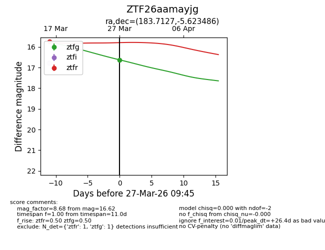
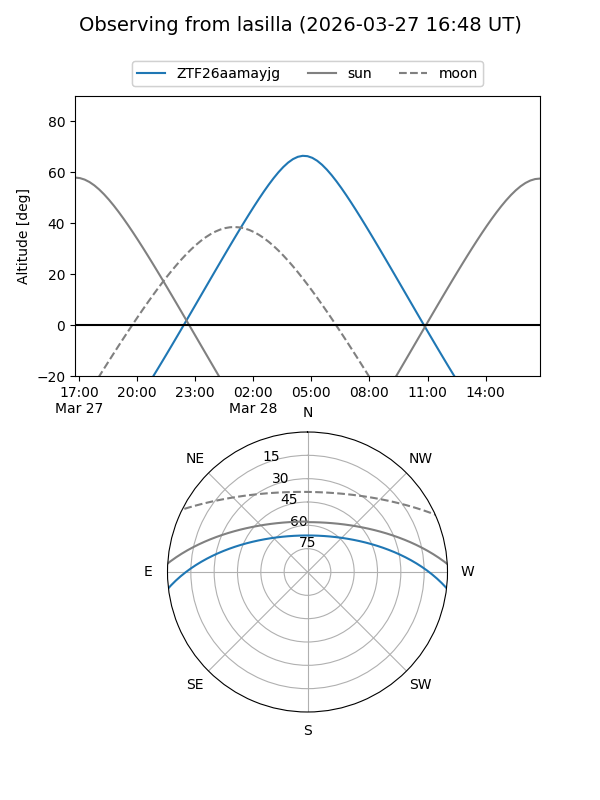
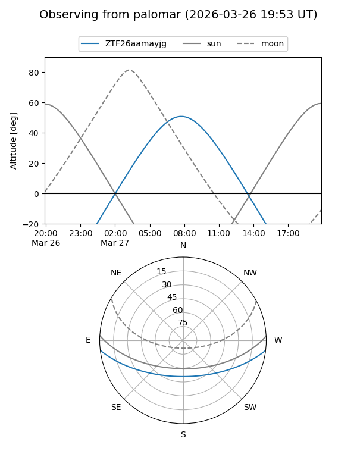
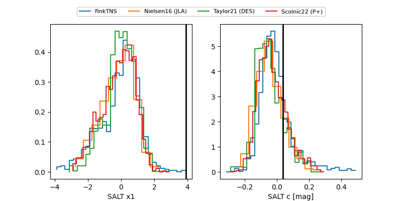

ZTF26aamayjg
Target ZTF26aamayjg at 2026-03-27 09:48
Aliases and brokers:
FINK: link
Lasair: link
ALeRCE: link
alt names
ZTF26aamayjg (ztf,fink_ztf)
Coordinates:
equatorial (ra, dec) = 183.7127,-5.62349
equatorial (HMS+DMS) = 12:14:51.04,-05:37:24.55
galactic (l, b) = (286.4657,+56.07412)
Flags:
Photometry:
last ztfg=16.62, ztfr=15.75
1 ztfg, 1 ztfr detections
Lightcurve

Visibility


Additional plots
